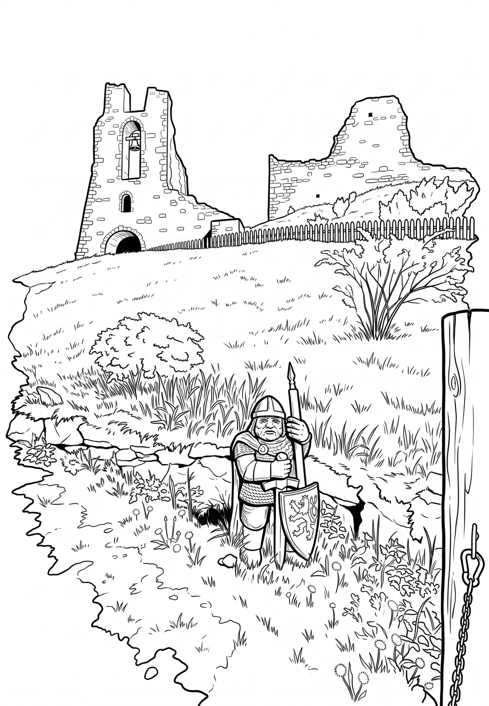

Hrad Potštejn
Královéhradecký kraj · 430 m n. m.

historická památka · #025
Potštejn (dříve též Potštýn, německy Puttenstein či Pottenstein) je rozsáhlá zřícenina hradu na zalesněném kuželovitém návrší jihovýchodně od obce Potštejn v okrese Rychnov nad Kněžnou ve východních Čechách, je dominantou střední části Podorlicka. Areál hradu je chráněn jako kulturní památka.